|
[2014年度後期早明戦] 10/5に行われた明治大学和泉体同連の方々との後期練習試合の写真を載せました。 今回早稲田は幹事校ということで準備など忙しかったですが、明治の方々やOB・OGの先輩方のご協力のおかげで無事滞りなく運営できました。ありがとうございました！ 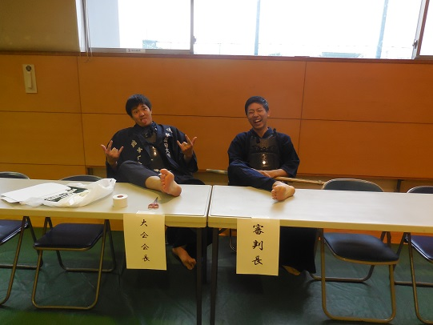 試合場設営にて。中学生のヤンキー風。 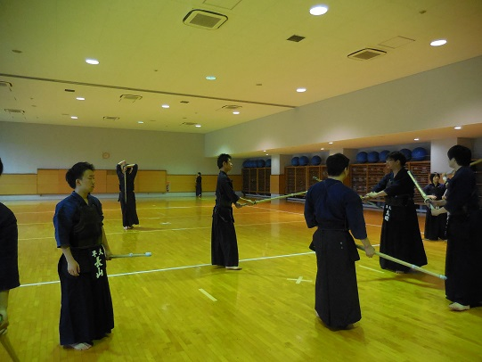 今回も明治大学のほうの体育館を使わせていただきました。いつもありがとうございます。 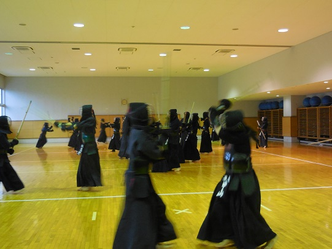 アップ中。みんな朝からはりきってるな・・・・ 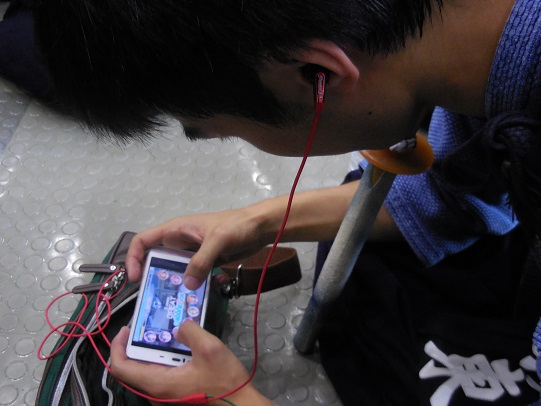 試合前の一コマ。スクフェスで精神統一するラブライバー伊東。 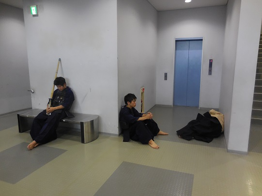 なんかストリートチルドレンみたいになってるぞ大丈夫か。 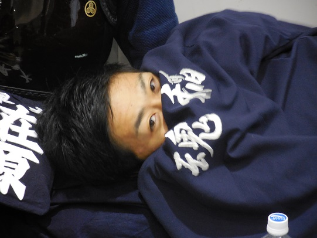 あざとい系さかにゃー、在原（三年）に膝枕をしてもらってます。 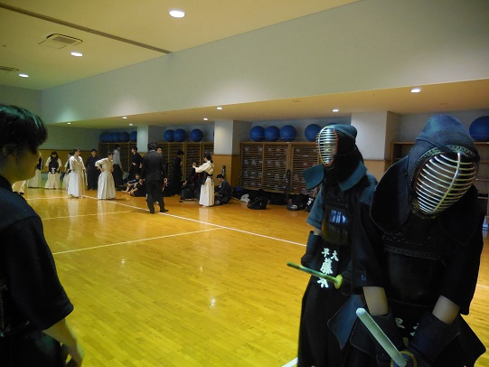 試合前にて。上本「死にたい」藤本「死にたい」 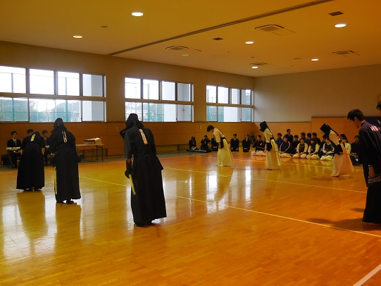 死にたいアピールもむなしく試合開始です。 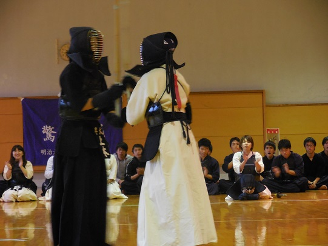 テンション下がってたけど試合はしっかり気合入れてやってた上本。 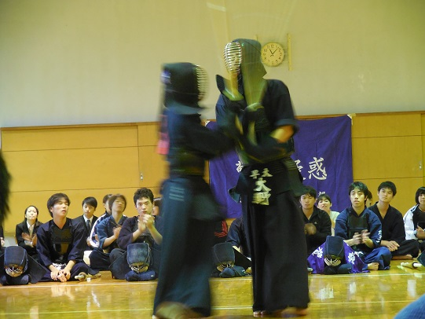 男子戦にて。ﾁﾝﾋﾟﾗ剣道（？）（一年・大野） 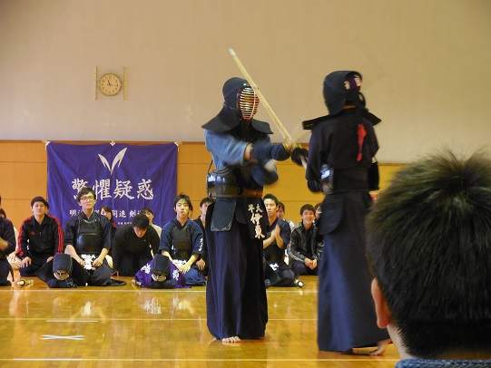 スクフェス精神統一により謎のオーラを纏う副務主任。 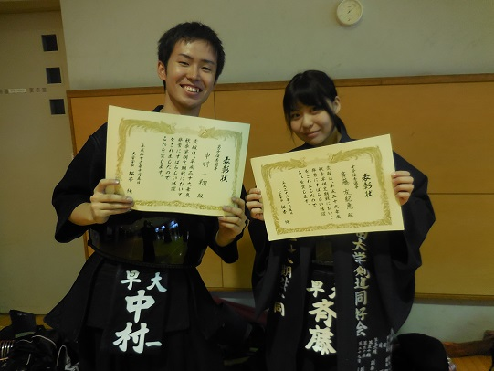 試合も終わって優秀選手の発表に。今回は中村（二年）と斉藤（三年）でした！ 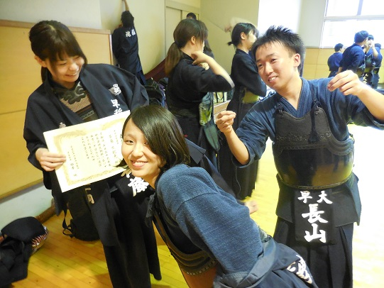 全然関係ないのに写りこむ二人（長嶋・長山） 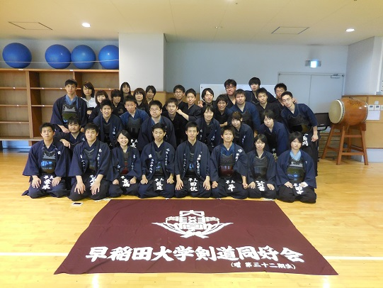 みんなで集合写真。お疲れ様でした！ 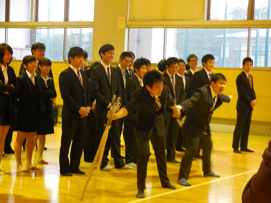 おまけ。明治とのエール交換にて恒例の一発芸。牧上ファンタジー ＃とは（巻き込まれる黒田） 後期も早稲田は負けてしまいましたが、前期よりもいい動きをしていた人も多く合宿の成果などが出てきたのではないでしょうか。 残りの試合も頑張っていきましょう！ (※写真へのコメントは全て管理人がしております。) |